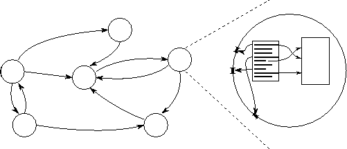
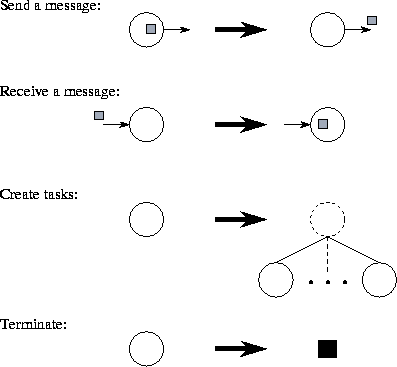
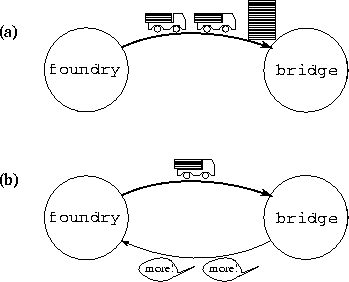
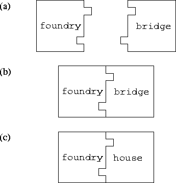

![[DBPP]](pictures//asm_color_tiny.gif)


![[Search]](pictures//search_motif.gif)
The von Neumann machine model assumes a processor able to execute sequences of instructions. An instruction can specify, in addition to various arithmetic operations, the address of a datum to be read or written in memory and/or the address of the next instruction to be executed. While it is possible to program a computer in terms of this basic model by writing machine language, this method is for most purposes prohibitively complex, because we must keep track of millions of memory locations and organize the execution of thousands of machine instructions. Hence, modular design techniques are applied, whereby complex programs are constructed from simple components, and components are structured in terms of higher-level abstractions such as data structures, iterative loops, and procedures. Abstractions such as procedures make the exploitation of modularity easier by allowing objects to be manipulated without concern for their internal structure. So do high-level languages such as Fortran, Pascal, C, and Ada, which allow designs expressed in terms of these abstractions to be translated automatically into executable code.
Parallel programming introduces additional sources of complexity: if we were to program at the lowest level, not only would the number of instructions executed increase, but we would also need to manage explicitly the execution of thousands of processors and coordinate millions of interprocessor interactions. Hence, abstraction and modularity are at least as important as in sequential programming. In fact, we shall emphasize modularity as a fourth fundamental requirement for parallel software, in addition to concurrency, scalability, and locality.

Figure 1.7: A simple parallel programming model. The figure shows
both the instantaneous state of a computation and a detailed picture
of a single task. A computation consists of a set of tasks
(represented by circles) connected by channels (arrows). A task
encapsulates a program and local memory and defines a set of ports
that define its interface to its environment. A channel is a message
queue into which a sender can place messages and from which a receiver
can remove messages, ``blocking'' if messages are not
available.
We consider next the question of which abstractions are appropriate and useful in a parallel programming model. Clearly, mechanisms are needed that allow explicit discussion about concurrency and locality and that facilitate development of scalable and modular programs. Also needed are abstractions that are simple to work with and that match the architectural model, the multicomputer. While numerous possible abstractions could be considered for this purpose, two fit these requirements particularly well: the task and channel. These are illustrated in Figure 1.7 and can be summarized as follows:

Figure 1.8: The four basic task actions. In addition to reading and
writing local memory, a task can send a message, receive a message,
create new tasks (suspending until they terminate), and
terminate.
The task abstraction provides a mechanism for talking about locality: data contained in a task's local memory are ``close''; other data are ``remote.'' The channel abstraction provides a mechanism for indicating that computation in one task requires data in another task in order to proceed. (This is termed a data dependency ). The following simple example illustrates some of these features.
 .
. Bridge Construction:
Bridge Construction:
Consider the following real-world problem. A bridge is to be assembled from girders being constructed at a foundry. These two activities are organized by providing trucks to transport girders from the foundry to the bridge site. This situation is illustrated in Figure 1.9(a), with the foundry and bridge represented as tasks and the stream of trucks as a channel. Notice that this approach allows assembly of the bridge and construction of girders to proceed in parallel without any explicit coordination: the foundry crew puts girders on trucks as they are produced, and the assembly crew adds girders to the bridge as and when they arrive.

Figure 1.9: Two solutions to the bridge construction problem. Both
represent the foundry and the bridge assembly site as separate tasks,
foundry and bridge. The first uses a single channel on
which girders generated by foundry are transported as fast as
they are generated. If foundry generates girders faster than
they are consumed by bridge, then girders accumulate at the
construction site. The second solution uses a second channel to pass
flow control messages from bridge to foundry so as to
avoid overflow.
A disadvantage of this scheme is that the foundry may produce girders much faster than the assembly crew can use them. To prevent the bridge site from overflowing with girders, the assembly crew instead can explicitly request more girders when stocks run low. This refined approach is illustrated in Figure 1.9(b), with the stream of requests represented as a second channel. The second channel can also be used to shut down the flow of girders when the bridge is complete.
We now examine some other properties of this task/channel programming model: performance, mapping independence, modularity, and determinism.
Performance. Sequential programming abstractions such as procedures and data structures are effective because they can be mapped simply and efficiently to the von Neumann computer. The task and channel have a similarly direct mapping to the multicomputer. A task represents a piece of code that can be executed sequentially, on a single processor. If two tasks that share a channel are mapped to different processors, the channel connection is implemented as interprocessor communication; if they are mapped to the same processor, some more efficient mechanism can be used.
Mapping Independence. Because tasks interact using the same mechanism (channels) regardless of task location, the result computed by a program does not depend on where tasks execute. Hence, algorithms can be designed and implemented without concern for the number of processors on which they will execute; in fact, algorithms are frequently designed that create many more tasks than processors. This is a straightforward way of achieving scalability : as the number of processors increases, the number of tasks per processor is reduced but the algorithm itself need not be modified. The creation of more tasks than processors can also serve to mask communication delays, by providing other computation that can be performed while communication is performed to access remote data.
Modularity. In modular program design, various components of a program are developed separately, as independent modules, and then combined to obtain a complete program. Interactions between modules are restricted to well-defined interfaces. Hence, module implementations can be changed without modifying other components, and the properties of a program can be determined from the specifications for its modules and the code that plugs these modules together. When successfully applied, modular design reduces program complexity and facilitates code reuse.

Figure 1.10: The task as building block. (a) The foundry and
bridge tasks are building blocks with complementary interfaces.
(b) Hence, the two tasks can be plugged together to form a complete
program. (c) Tasks are interchangeable: another task with a
compatible interface can be substituted to obtain a different
program.
The task is a natural building block for modular design. As illustrated in Figure 1.10, a task encapsulates both data and the code that operates on those data; the ports on which it sends and receives messages constitute its interface. Hence, the advantages of modular design summarized in the previous paragraph are directly accessible in the task/channel model.
Strong similarities exist between the task/channel model and the popular object-oriented programming paradigm. Tasks, like objects, encapsulate data and the code that operates on those data. Distinguishing features of the task/channel model are its concurrency, its use of channels rather than method calls to specify interactions, and its lack of support for inheritance.
Determinism. An algorithm or program is deterministic if execution with a particular input always yields the same output. It is nondeterministic if multiple executions with the same input can give different outputs. Although nondeterminism is sometimes useful and must be supported, a parallel programming model that makes it easy to write deterministic programs is highly desirable. Deterministic programs tend to be easier to understand. Also, when checking for correctness, only one execution sequence of a parallel program needs to be considered, rather than all possible executions.
The ``arms-length'' interactions supported by the task/channel model makes determinism relatively easy to guarantee. As we shall see in Part II when we consider programming tools, it suffices to verify that each channel has a single sender and a single receiver and that a task receiving on a channel blocks until a receive operation is complete. These conditions can be relaxed when nondeterministic interactions are required.
In the bridge construction example, determinism means that the same bridge will be constructed regardless of the rates at which the foundry builds girders and the assembly crew puts girders together. If the assembly crew runs ahead of the foundry, it will block, waiting for girders to arrive. Hence, it simply suspends its operations until more girders are available, rather than attempting to continue construction with half-completed girders. Similarly, if the foundry produces girders faster than the assembly crew can use them, these girders simply accumulate until they are needed. Determinism would be guaranteed even if several bridges were constructed simultaneously: As long as girders destined for different bridges travel on distinct channels, they cannot be confused.
In subsequent chapters, the task/channel model will often be used to describe algorithms. However, this model is certainly not the only approach that can be taken to representing parallel computation. Many other models have been proposed, differing in their flexibility, task interaction mechanisms, task granularities, and support for locality, scalability, and modularity. Here, we review several alternatives.
Message passing. Message passing is probably the most widely used parallel programming model today. Message-passing programs, like task/channel programs, create multiple tasks, with each task encapsulating local data. Each task is identified by a unique name, and tasks interact by sending and receiving messages to and from named tasks. In this respect, message passing is really just a minor variation on the task/channel model, differing only in the mechanism used for data transfer. For example, rather than sending a message on ``channel ch,'' we may send a message to ``task 17.'' We study the message-passing model in more detail in Chapter 8, where we discuss the Message Passing Interface. In that chapter, we explain that the definition of channels is a useful discipline even when designing message-passing programs, because it forces us to conceptualize the communication structure of a parallel program.
The message-passing model does not preclude the dynamic creation of tasks, the execution of multiple tasks per processor, or the execution of different programs by different tasks. However, in practice most message-passing systems create a fixed number of identical tasks at program startup and do not allow tasks to be created or destroyed during program execution. These systems are said to implement a single program multiple data (SPMD) programming model because each task executes the same program but operates on different data. As explained in subsequent chapters, the SPMD model is sufficient for a wide range of parallel programming problems but does hinder some parallel algorithm developments.
Data Parallelism. Another commonly used parallel programming model, data parallelism, calls for exploitation of the concurrency that derives from the application of the same operation to multiple elements of a data structure, for example, ``add 2 to all elements of this array,'' or ``increase the salary of all employees with 5 years service.'' A data-parallel program consists of a sequence of such operations. As each operation on each data element can be thought of as an independent task, the natural granularity of a data-parallel computation is small, and the concept of ``locality'' does not arise naturally. Hence, data-parallel compilers often require the programmer to provide information about how data are to be distributed over processors, in other words, how data are to be partitioned into tasks. The compiler can then translate the data-parallel program into an SPMD formulation, thereby generating communication code automatically. We discuss the data-parallel model in more detail in Chapter 7 under the topic of High Performance Fortran. In that chapter, we show that the algorithm design and analysis techniques developed for the task/channel model apply directly to data-parallel programs; in particular, they provide the concepts required to understand the locality and scalability of data-parallel programs.
Shared Memory. In the shared-memory programming model, tasks share a common address space, which they read and write asynchronously. Various mechanisms such as locks and semaphores may be used to control access to the shared memory. An advantage of this model from the programmer's point of view is that the notion of data ``ownership'' is lacking, and hence there is no need to specify explicitly the communication of data from producers to consumers. This model can simplify program development. However, understanding and managing locality becomes more difficult, an important consideration (as noted earlier) on most shared-memory architectures. It can also be more difficult to write deterministic programs.
© Copyright 1995 by Ian Foster